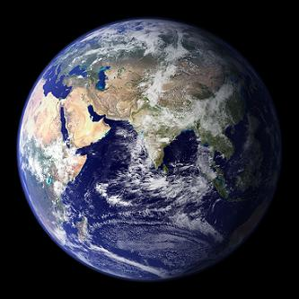

恳谢指教但望观空莫着空
冯冯
迷失在未来 / 誊录
陈志仁大医生善知识：
一九八七年十月三十日收到“天华”转来大函，先生指示各经文，我亦略有所研读，亦知一切均无实性，故此于新着“太空科学核子物理学与佛理之印证”一书亦略申此意。先生所见以前两书实为我欲初步从“有”入“空”之接引初机，先生指教极是，唯接引初机，若一下就跳到“空宗”大经最深之一的楞严，想难为世人所可接受。楞严与阿含经各有所阐，阿含是阿难陀及佛身所闻之笔受。佛陀讲阿含时，先从“有”入，故有“起世经”等，我亦步佛意而已。若一切空到“绝对”则连修行及慈悲亦是多余了，佛又何必讲起世诸经？故此，我仍窃学龙树菩萨之意中道，不敢“学空执空”。若是学空见空执着空，则无非又走入牛角尖，何分真妄？楞严偏重修行之心法，教人以空观观宇宙，但事实上，恐非否定一切（第八章戒执顽空），并非否定再否定再否定宇宙，若以楞严对世人说一切无实性，世人只须问：“你肚子饿是实是妄？你病你痛，是实是空？是真实妄？”是妄何必食，何必医？空性是佛学最高境界？空性是佛学最高境界，但恐怕在对现代人讲还须一步一步来，不能一下就对他们说“空”呢！我有苦衷，尚祈见谅及指教！我是一步一步接引众生，若对像您这样的无上超级大智大慧知识，拙着自然是如雪见日了。您说到拙着不是真佛法，我亦同感，我只是以“假”接引人接近“真佛法”吧！除了佛陀所说，那有真佛法？今日佛教有些人士一般作为，是真佛法者，有几人？许多连慈悲布施都不做，只知自肥，又何尝空？比俗人更俗哪！我不自量力，以科学粗知来接引科学人士及知识青年，自知力薄，大善知识学富五车，深得佛法真髓，何不多发表鸿文，作真知灼见之接引？（我已请天华发表大函。)我在此幼稚阶段，仍须以科学知识来浅释佛学初步的“起世经”（阐述宇宙不停生灭旋转循环之理），未能进入空宗经典也，尚祈见谅。先贤梁起超先生论楞严经是伪经，亦可能是见其与阿含抵触，空有各执两端，乃疑其为武后令房勉伪造。梁氏之意，我无资格评论，但在目前，我仍以阿含为基本，从有入空，我认为真空非空，真有无有，空有一体；若要执空，则容易堕入顽空，着了空魔，故此，我暂时仍不采用楞严空观。出世不离世间法，若都照楞严，则连真如境界亦是虚假的了，何必学佛？何必修行？行什么慈悲？劝什么善？古来多少大德，从大乘退为自了汉，也就是“太执空”了吧！
我还无资格谈论佛学“空”、“有”、“般若”，也无足够学识可以与先生讨论“空”“有”，只有恭敬指导吧！您的赠诗令我既感且愧，唯有拜谢了。
总之，我在拙着均常有提醒读者（今后更须多提），仍以深入佛经为唯一正途，勿以为拙着是真佛法，只可说是以假修真的初步接引，先生指示拙着不是真佛法，实乃一针见血的灼见，当头棒喝！谨此再致谢忱。并颂
时祺
末学 培德和南
一九八七、十、卅（冯冯又名培德）
图片出处
原载《天华》第103期：1987年12月1日